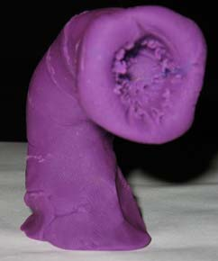

Edwin cast Arcane Eye, his first instinct whenever such a decision needed to be made. The Eye explored the tunnel to the west, spotting a Chuul crouching at the bottom of a pit. This one was enormous, far bigger than the first one encountered. The walls of the chamber beyond the huge Chuul were lined with a slimy mucus. Resting in the center of the chamber was a very large, vaguely fish shaped creature. Katriana identified it as an Aboleth.
A tunnel in the back of this room led a short ways before terminated at a hole in the ceiling. The chamber beyond was also completely coated in slimy mucus, but where the slime was relatively smooth in the other rooms here it was lumpy and uneven. The Eye took a closer look at one of the protrusions: something had been secreted to the wall under the slime.
Two hallways led to an enormous chamber to the south. Each hallway was blocked by a portcullis at the end, beyond which could be seen the swimming forms of dozens of small Chuul ranging in size from a few inches to about a foot. This was some sort of spawning chamber.
After extensive telepathic discussion, the group had an epiphany: why face the Aboleth when they could loot its treasure room and leave? Edwin cast Passwall to create a tunnel leading up to the room with items secreted behind the mucus. Grapthar cast Silence on a coin, to cover any noise made by the extraction. The Arcane Eye was parked above the Aboleth's supine form, just in case. Edwin planned to use a Servant Horde to remove the loot from the slime, clean it, and stack it neatly on the floor.
Things immediately started to go wrong. The Aboleth darted about and swam up into the inner sanctum the instant after the Passwall opened. The rest of the party had not had a chance to cast defensive magics nor prepare, but nonetheless the battle was joined.

The combat then progressed from from bad to worse. Everyone felt a rumbling, and suddenly an enormous Purple Worm burst from the rock wall of the chamber. It attacked Chaden for 20 points of damage and tried to swallow her whole. Fortunately she was saved by her Freedom of Movement spell.
Round 1
Grapthar cast Recitation, and Katriana summoned a large Water Elemental which immediately attacked the Aboleth (it missed). Chaden struck back at the Purple Worm, inflicting 11 points of damage. The party's tactical position being untenable, Edwin cast Greater Dimension Door to move 50' down the hallway and regroup.
Round 2
Grapthar cast Divine Favor, and Katriana summoned a second Water Elemental to send against the Purple Worm. The huge Chuul moved out of the pit in the floor to grapple with the large Water Elemental attacking the Aboleth, while the Purple Worm turned its attention to the second Elemental attacking it. Edwin cast Mechanus Mind on Grapthar, to provide a large bonus to Will saves (to help him resist any psionic influence from the Aboleth). Chaden cast True Strike.
Round 3
Grapthar, sufficiently powered up, charged the Purple Worm for 18 pts of damage. Chaden hit the Worm for 8 points, and Katriana also squeezed by to attack the worm. The medium Water Elemental scored a critical hit for 20 points. The Purple Worm responded by attacking the Elemental, nearly destroying it and swallowing it whole.
Meanwhile the Large Water Elemental attacked the huge Chuul for 30 points. The Chuul latched onto the Elemental with its claws, constricting.
Edwin used the Greater Dimension Door to teleport himself and Sabrina past the Purple Worm and back into the chamber where the Aboleth and Chuul battled the large Elemental. Edwin unleashed a Lightning Bolt, inflicting 31 points of damage to the Chuul. Sabrina then charged onto its back, inflicting another 15 points.
Round 4
Grapthar attacked the Purple Worm twice for a total of 38 points of damage. Katriana (in the form of a Giant Octopus) hit the Purple Worm with six tentacles for a total of 52 points of damage. The enraged Worm lashed out at Katriana, inflicting 26 hp and swallowing her whole. Chaden slashed the worm twice for 26 points. Edwin fired Magic Missiles at it for 15 points of damage, finally killing the worm (but with Katriana still trapped inside).
The Chuul missed in its attack on the large Water Elemental, and the Elemental missed the Chuul. Sabrina clawed at the Chuul for 20 more points of damage, killing it. The Aboleth hit the Water Elemental with a tentacle, nearly killing it.
Round 5
Attempting to escape, Katriana wildshaped into a shark to begin tearing her way out. She took 8 points of damage from the acid in the Purple Worm's gullet. Chaden hacked at the worm to try to free Katriana, but made little progress.
Grapthar moved to attack the Aboleth, casting Owl's Wisdom as he went. The large Water Elemental missed in its attack on the Aboleth, but Edwin's Manyjaws hit for 33 points of damage.
Everyone had to make a Will save, presumably against the Aboleth's psionic powers. Sabrina and the large Water Elemental failed and were Slowed. Sabrina, sensing Katriana was in danger, moved to rend at the corpse of the Purple Worm.
Round 6
Grapthar could not get past the Water Elemental to attack the Aboleth, so he cast Bull's Strength. He had to make a Will save against another psionic effect, but with all of the buff spells cast upon him he made it handily. The Water Elemental missed the Aboleth but continued to distract its attention. Edwin continued to concentrate on the Manyjaws, inflicting another 41 points of damage on the Aboleth.
Katriana cast Splinter Bolt to try to create a hole big enough to escape, but even with Chaden and Sabrina hacking from outside she could not fit through. She took another 8 points of acid damage.
Round 7
The Water Elemental hit the Aboleth, and the third and final round of Edwin's Manyjaws inflicted another 43 points. The Aboleth saved for half damage from the spell, though even so it was nearly killed. The Aboleth target Grapthar for another psionic attack, but the dwarf resisted again.
Katriana tried another Splinter Bolt but still did not manage to free herself. The 8 points of acid damage came very close to killing her.
Round 8
Katriana cast Resist Energy (Acid), finally ending the continuous damage inflicted upon her by the Purple Worm's digestive juices. Chaden kept hacking at the worm's flank, attempting to free the Druid.
The large Water Elemental, though nearly destroyed, landed one final blow to the Aboleth's head. The Aboleth died. The Purple Worm instantly disappeared, freeing Katriana. All of the damage inflicted by the illusionary worm simply disappeared as well, leaving Chaden and Katriana hale and healthy.
Aftermath
Even with the illusionary damage restored the party was still badly battered and low on spells. The Rope Trick extradimensional resting spaces having worked so well before, Edwin cast it again. He also cast <Servant Horde, instructing the army of magical automatons to retrieve and clean all of the items secreted behind the slime of the Aboleth's inner sanctum.
Chaden searched the body of the Aboleth, being careful to avoid touching the dangerous mucus. Secreted in a depression under the slime on its chest she found a black wand, slightly larger than the Wand of Siryl. This was the second segment of the Staff of the Wind Dukes.
Total Loot for this story arc:
From the Driders: